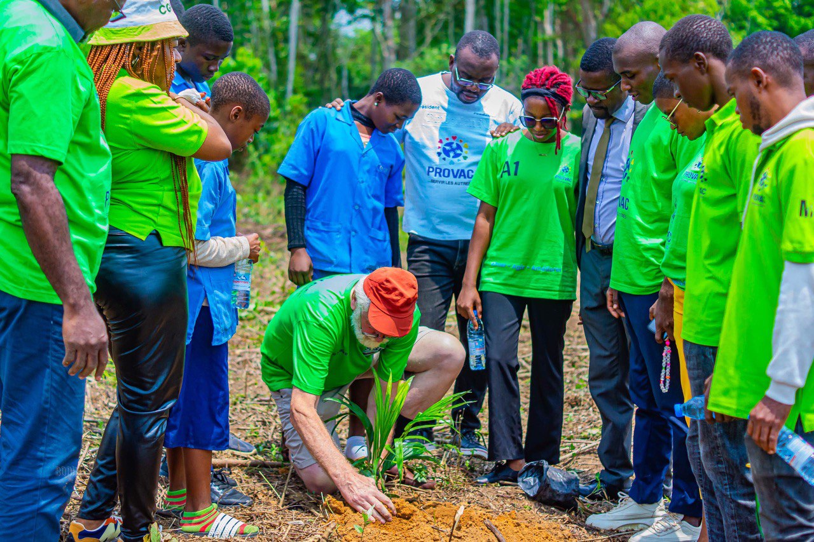
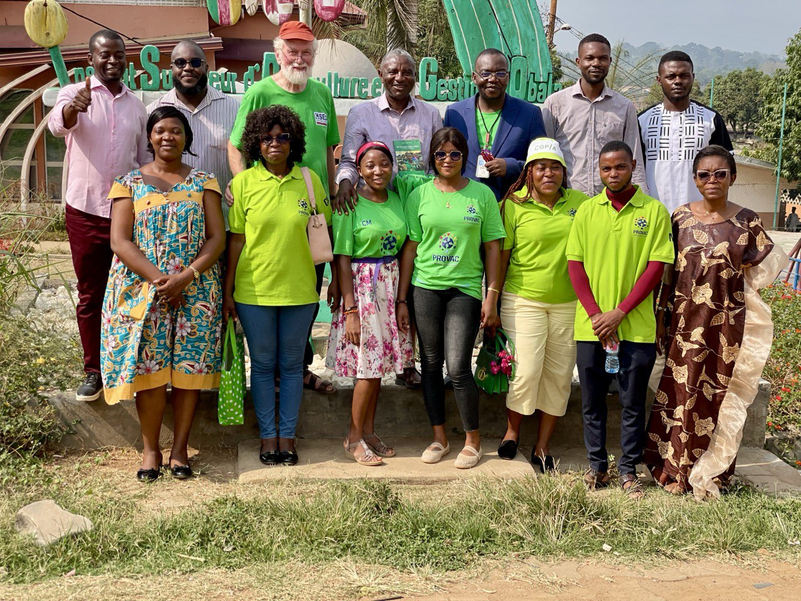

Du 24 Février au 21 Mars 2025, l'Ingénieur allemand Friedhelm CORDES à effectuer une mission bénévole dans le cadre d'un projet de coopération internationale financé conjointement par l'ONG allemande Senior Experten Service(SES) et PROVAC. L'expert etait chargé d'accompagner nos projets agropastoraux, de former nos membres et bénévoles dans la gestion d'une organisation non lucrative.

Le séjour de l’expert allemand Friedhelm Cordes a débuté par une chaleureuse réception à l’aéroport international de Yaoundé-Nsimalen, suivie d’un pot de bienvenue à Mbankomo. Dès le lendemain, une cérémonie solennelle a marqué son accueil officiel au siège de PROVAC, où il a présenté les grandes lignes de sa mission. Cette introduction a été enrichie par des interventions de responsables locaux et la présentation des activités de terrain de l’association.

Une part importante du séjour a été consacrée aux visites des projets agropastoraux de PROVAC à Angon I, Zoalouma. L’expert a échangé avec les bénéficiaires sur les opportunités d’investissement dans ce secteur, notamment à travers des séminaires pratiques destinés aux jeunes. Ces actions visent à générer des revenus durables pour soutenir le fonctionnement de l’association et renforcer son autonomie financière.

Plusieurs séminaires de formation ont été animés par l’expert au siège de PROVAC. Les thématiques abordées incluaient la gestion des organisations à but non lucratif, le montage de projets financés, le leadership associatif, les outils de communication, ainsi que l’importance de l’esprit critique et civique dans les structures communautaires. Ces sessions ont réuni des membres actifs de PROVAC, des jeunes leaders, des enseignants et des bénévoles. À l’issue de chaque session, des attestations de participation ont été remises aux participants, valorisant leur implication et favorisant la reconnaissance de leur engagement.

Le programme a également intégré des volets culturels, incluant des cérémonies dans des établissements scolaires, des messes communautaires, des visites de sites historiques (vestiges allemands, par exemple) et des dons à des orphelinats. L’expert a visité plusieurs institutions telles que l’ISAGO à Obala, l'EPAB à Binguela et des lycées à Mbankomo et Youndé, consolidant les relations internationales de PROVAC.
Le séjour s’est achevé par une Assemblée Générale Extraordinaire de PROVAC, durant laquelle l’expert a partagé ses observations et recommandations. L’événement a également été l’occasion de dresser un bilan des échanges, de remercier les différents partenaires, et de poser les bases de futures collaborations. Grâce à ce partenariat avec le Senior Experten Service, PROVAC affirme sa volonté de développer des projets autonomes, durables et centrés sur l’humain, tout en continuant à tisser un réseau de partenaires engagés à l’international.